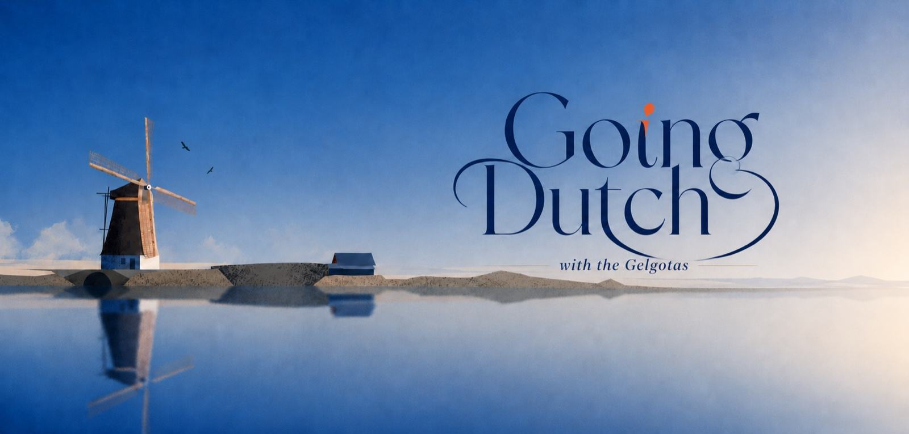
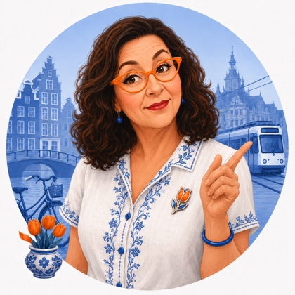
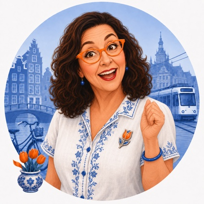
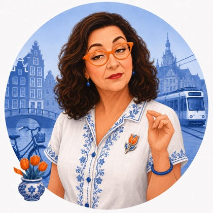
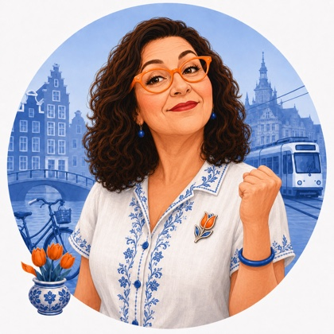

A letter from Tulp de Gid 🌷
Lieve Geltovas, this week the Netherlands got a small reminder that some of its oldest problems are actually new again. Out on the Veluwe, shepherds have gone looking for help that has not been needed here in a century and a half. Around that: schools are about to confiscate a few thousand phones, a Dutch woman just became the best in the world at a very specific and very wholesome skill, the clocks are about to play a trick on your Thursday calls, and a small palace in The Hague is about to get some very famous houseguests. Put the soup on. This one runs a little warm.

The big story
The sheep just got their own bodyguards back
Wolves vanished from the Netherlands about a hundred and fifty years ago and nobody here had to think about them again until a few started wandering back over the German border in the last decade. They settled on the Veluwe, the big stretch of forest and heath in the middle of the country, and in 2019 a pair there had pups, the first wolves born wild on Dutch ground in two hundred years. It has been a slow, steady return since, and this year it reached the sheep. A volunteer group looking after flocks on the Veluwe has started hiring proper reinforcements: two Maremmano Abruzzese dogs, a big white Italian breed bred for exactly one job, standing between a wolf and a flock, which Italian shepherds have trusted for centuries and which nobody in this country has needed for about as long as the wolves have been gone.
It is a strange kind of homecoming for both species at once. A country that spent four hundred years draining the sea and arguing it into submission is now quietly relearning how to share a field with something wild, and the fix it reached for was not a fence or a drone, it was a dog with an old job description. I find that rather comforting, honestly, for reasons that have nothing to do with sheep.

A few quick things, told quickly
The cabinet wants phones out of the classroom
Starting in January, the government wants every primary and secondary school in the country to ban mobile phones from the classroom entirely, not just silence them. Years away from mattering to this family directly, but worth filing away: by the time a certain two year old is old enough to carry a backpack to school herself, a phone will not be allowed in it during lessons.

A Dutch woman just became the best in the world at porridge
A twenty eight year old from Zutphen won the Golden Spurtle this month, the trophy for the World Porridge Making Championship, held every year in a small Scottish village called Carrbridge. Wherever the competition is, apparently, the Dutch will eventually show up and quietly win it.

The clocks are about to get complicated, just for you
On the 25th of October Dutch clocks fall back an hour for winter, three in the morning becomes two, but American clocks do not follow until the 1st of November. For that one week in between, the gap between here and Portland narrows from nine hours to eight, which means your Thursday call could land looking like it moved even though nobody touched 09:30 in Portland. I will flag it properly the week it actually happens so nobody is an hour early or late.

Dish of the week
The soup that tells you the coats are coming back out
Erwtensoep, also called snert, is the dish that marks the actual turn of the Dutch year more reliably than any calendar: thick green split peas, potato, carrot, leek, and a ring of smoked rookworst sausage, simmered until a spoon can stand up in it on its own, and served with dark rye bread and a few slices of smoked bacon on the side. It is traditionally a deep winter dish, the one people eat after the New Year's dip into the North Sea, but kitchens quietly start making it the moment the first properly cold week arrives, which around here is right about now.
It freezes well, it is better the next day, and it asks for almost nothing from you except time on the stove, which makes it a fairly honest dish for a fairly honest country.
🌷 Tulp's Dutch Calendar Radar
Half the country is about to vanish for a week, on purpose
The autumn school holiday, herfstvakantie, runs from the 10th to the 18th of October in the northern half of the country and from the 17th to the 25th down here in the south, which includes South Holland and the Hague. It is one week, built right into the school calendar every single year, when families pack up for a cottage, a holiday park, or just a quiet week at home, and both the roads and the trains noticeably empty out in the middle of it. Worth remembering for a few years from now, when it is Amellia's week off too.

The painting that doubles as a warning label
Jan Steen packed this whole canvas with one family making the loudest possible racket together: a grandmother and father singing at the top of their lungs, a toddler getting a sip from the jug, a boy with a bagpipe, a dog getting underfoot of all of it. It looks like pure chaos and pure joy at the same time, which was exactly Steen's trick.
Above the mantel he painted a sign that spells out the actual point in old Dutch: soo de ouden songen, soo pypen de jonge, as the old sang, so the young pipe. A three hundred and fifty year old reminder that children pick up a household's habits and its noise level long before they pick up much else. Something worth remembering once there is a two year old in the room taking notes on all of you.

A small palace with a complicated past, about to get famous houseguests
The Mauritshuis itself, that elegant little building on the pond right in the middle of government quarter, was built in the 1630s for Johan Maurits van Nassau Siegen, a colonial governor whose fortune and taste were both tied up in the Dutch presence in Brazil at the time. A beautiful building with an uncomfortable backstory, which the museum is now open about rather than quietly skipping past. It has held the national collection of Dutch masters since 1822.
From the 15th of October it gets genuinely exciting: the Mauritshuis and Spain's Thyssen Bornemisza museum are swapping twenty five masterpieces each, the first exchange of its kind between the two collections. Works by Jan van Eyck, Albrecht Durer and El Greco arrive from Madrid to hang in The Hague through the 17th of January, while twenty five Hague treasures travel the other way. A genuinely rare chance to see paintings that do not normally leave Spain, five minutes from Alec and Irena's own front door. More on the Thyssen Bornemisza exchange →
"De herfst is mijn favoriete seizoen." (Autumn is my favourite season.)
"Het regent veel in de herfst." (It rains a lot in autumn.)
And a glance, before I let you go, at what this little family of ours is up to.
🌷 Tulp's question for the table
The shepherds on the Veluwe just reached for a very old solution, a real guard dog, to solve a brand new problem. Is there an old family habit or skill of ours that might turn out to be surprisingly useful again once you are all living in the same place?
That is the letter, my dears. Wolves pushing old solutions back into fashion, a government going after the nation's phones, a Zutphen woman with the best porridge on earth, a clock change about to play tricks on your Thursday, and a small Hague palace about to host paintings that almost never leave Spain.
Enjoy your call this Thursday, and maybe have the soup pot going before it starts.
Tot snel, which just means see you soon. Liefs, Tulp.

And here is where I will leave you: the same wild heath the wolves and their new guard dogs now call home, turning its usual deep green toward brown and gold right on schedule. The quiet version of the country, getting on with its oldest arguments while the rest of us watch the soup.